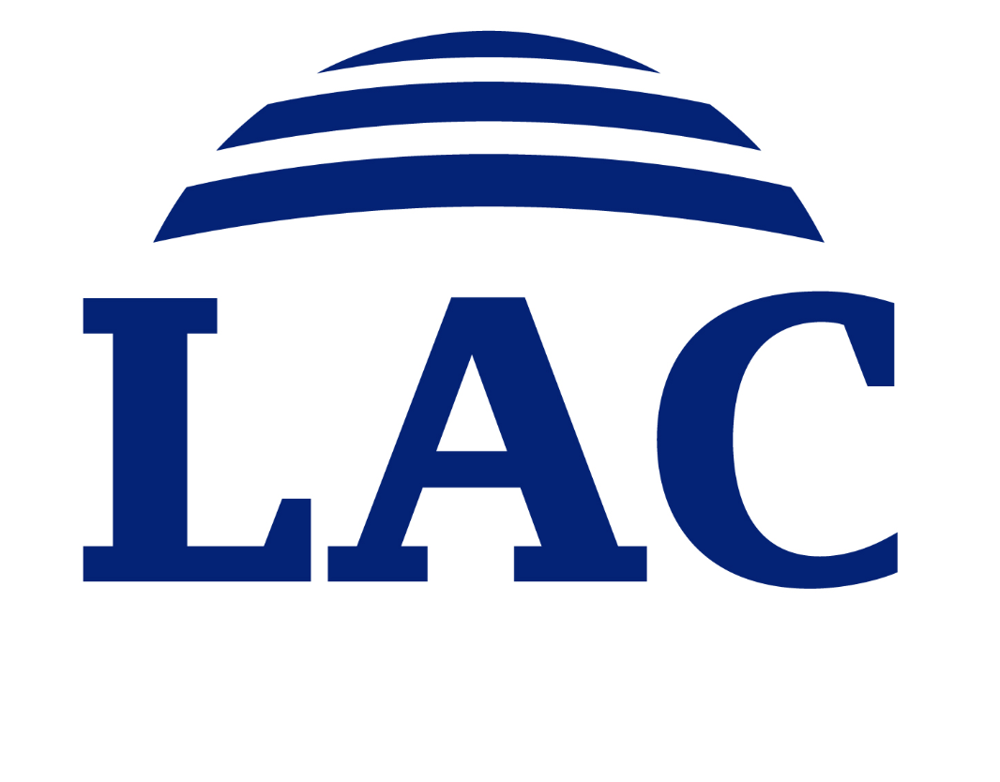
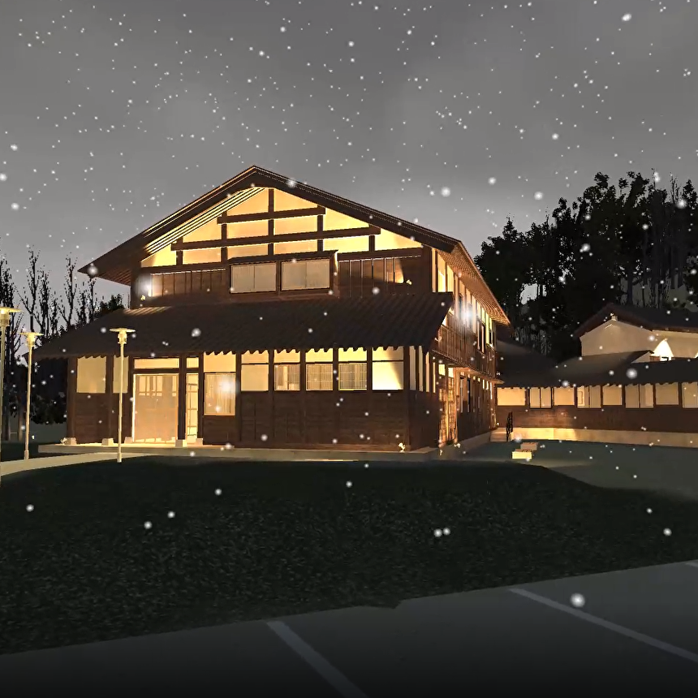
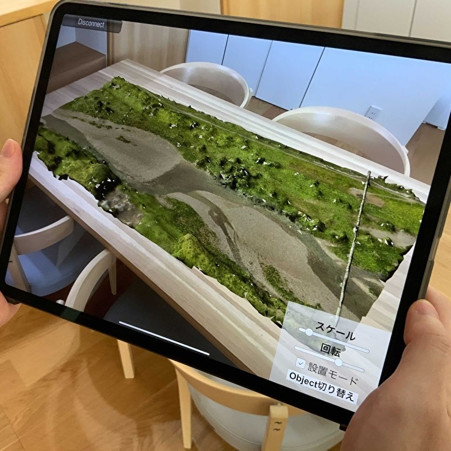

About
- 小学生のとき、救助用ロボットのエンジニアになりたくてC言語を勉強し始めるも挫折
- 高校入学後再びC言語勉強を再開し、ついでにPythonも勉強してWebスクレイピングで遊ぶ
- 大学に入ってからはインフラの面白さに引き込まれ、Cisco社のネットワーク機器で自宅ネットワークを構築し、研究室のネットワークの管理も行っている
- 株式会社BearTail様と業務委託契約でWebのフロントとバックエンドの開発を行っている
- IoAプロジェクト(友人と一緒に作ったxRを利用した作品を作るグループ)に所属しており、開発を行う班（在籍人数15名）のリーダーをしている。主に開発やPM、コードレビューを行っている。
- インフラ×バックエンドで就活希望
名前: 石黒湧大
所属: 金沢工業大学 情報工学科 3年
github: rainierrr
-

2019/09
株式会社ラックでインターン
ラック5daysインターンに参加しました。チームメンバーと協力しながらログ解析やデジタルフォレンジックを行いました。
-

2019/12 ~ 現在
株式会社Bear Tail様と業務委託契約
2019年の9月に株式会社Bear Tail様と業務委託契約を行いました。（現在2021年4月も継続中） 主にRECEIPT POSTというクラウド経費精算システムのフロントとバックエンドの開発業務を行っています。
-
2020/8
サマーインターン
以下の4社のインターンに参加しました。NTTドコモ(3days)
コロナ禍をテーマとしたハッカソン。自分のチームではヘルスケアのためのWebアプリを開発し、 自分はAIとWebアプリのサービス基盤(インフラ)を担当。NEC(2weeks)
Terraformを使ったAWSのECSとGitOpsの検証とサービス基盤構築Nifty(3days)
サービス解約率を予想するモデルの作成を題材としてミニkaggleいい生活(1week)
ハッカソンで賃貸物件サイトを作成 -

2020/12~2021/2
IoAプロジェクトでの受託開発研
株式会社米沢電機様から白山理などの温泉宿などのライトアップデザインの作成とシミュレーションツールの 作成を依頼され、開発を行いました。
-
2021/2
NTTcomインターン
NTTcomの実務インターンに２週間参加しました。 OpenStackでのシンプロビジョニング機能の検証を行い、その結果をドキュメントにまとめ報告しました。
-

2021/1〜2021/3
ARアプリの委託開発
コロナ禍でも建築系の会社で円滑なリモートワークをできるようにすることを目的に、 複数の人がARを使って同じ工事現場を確認できるiOSアプリケーションの開発を行いました。 マルチユーザー対応(ARオブジェクトの同期)やボイスチャット、注目を集めるためのマーカー設置などの機能 を開発しました。
-
2023
就職予定